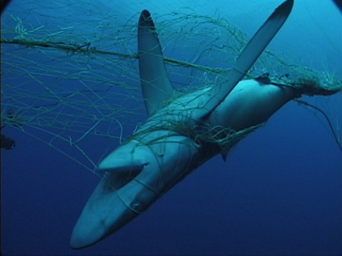

Recently, I came across a fascinating online article written in September 2018 by:
- Nabin Sharma (Senior Lecturer (UTS School of Software, University of Technology Sydney)
- Michael Blumenstein (Associate Dean of Research, Strategy and Management at the University of Technology Sydney).
The article, "SharkSpotter combines AI and drone technology to spot sharks and aid swimmers on Australian beaches" proposed a drone that could be used in the search and rescue field, equipped with artificial intelligence to intervene human interactions with marine predators while airborne.
Shark attacks are on the rise in Australia and throughout the world. Scientists suggest that this is not because sharks have become more aggressive or desperate for more food. Instead, it is believed that it is the result of a growing human interest in aquatic recreation combined with advancements in water clothing (i.e wetsuits, drysuits, etc) that permit human activity in colder water temperatures and for longer periods of time.
To reduce the likelihood of human interactions with sharks, Australian officials have established various protective systems such as:
1. Shark Nets:
- These nets are expensive and challenging to install / repair
- They become ineffective due to corrosion caused by immersion in salt water.
- They are dangerous to marine ecosystems because they harm the animals (entanglement)
2. Land Based Lifeguards
- Lifeguards are often not able to see predators until they are very close to shore.
- Lifeguards are often not able to tell the difference between dangerous marine predators (sharks) and non-dangerous marine animals (dolphins, whales, etc)
3. Search and Rescue Planes / Helicopters
- These vehicles are extremely expensive to operate and maintain (fuel, maintenance, and other costs)
- Spotters in these vehicles, while more effective than land-based spotters, are still not very effective / accurate
The University of Technology at Sydney and The Ripper Group have proposed a solution to decrease water-related incidents. It is a drone called, “SharkSpotter”. SharkSpotter is equipped with an on-board camera, which sends its video-feed to a computer that analyzes the footage. Using computer vision, the computer can detect various, shapes, patterns, and colors.
Computer vision patterns include:
- Shark / predator detection
- Swimmers in distress: (flailing arms, crying for help, etc)
- (Harmless) marine animal detection (ex. dolphin, whale, schools of fish, etc)
- Swimmers / surfers
- Various types of boats (yachts, sail-boats, etc)
Emergency protocols (controlled by the operator)
- Deploy a self inflating flotation raft
- Deploy a canister of shark repellent
- Sound an alarm
Once the battery in low, the drone can return to its landing pad where it automatically lands and re-charges itself before repeating once fully charged.
I interviewed Dr Gavin Hanke via Email. Dr Hanke is a curator of vertebrate zoology at the Royal BC Museum. He answered a variety of my questions and provided me with his opinion on the SharkSpotter drone project.
SharkSpotter has an accuracy of approximately 90% compared to spotters in helicopters with an accuracy of 17.1% and spotters in fixed wing aircraft with an accuracy of 12.5%
The Sharkspotter drone has increased efficiency by removing humans from the identification / spotting process.
Because sharks can be identified earlier using AI, the liklihood of interactions and casualties can be reduced. This means that humans are still able to enjoy the oceans without harming marine ecosystems or being concerned of the dangers surrounding them.